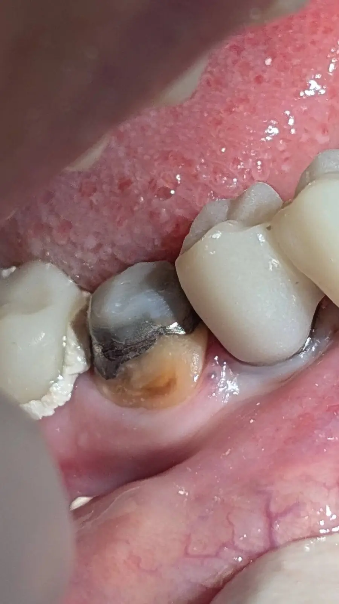
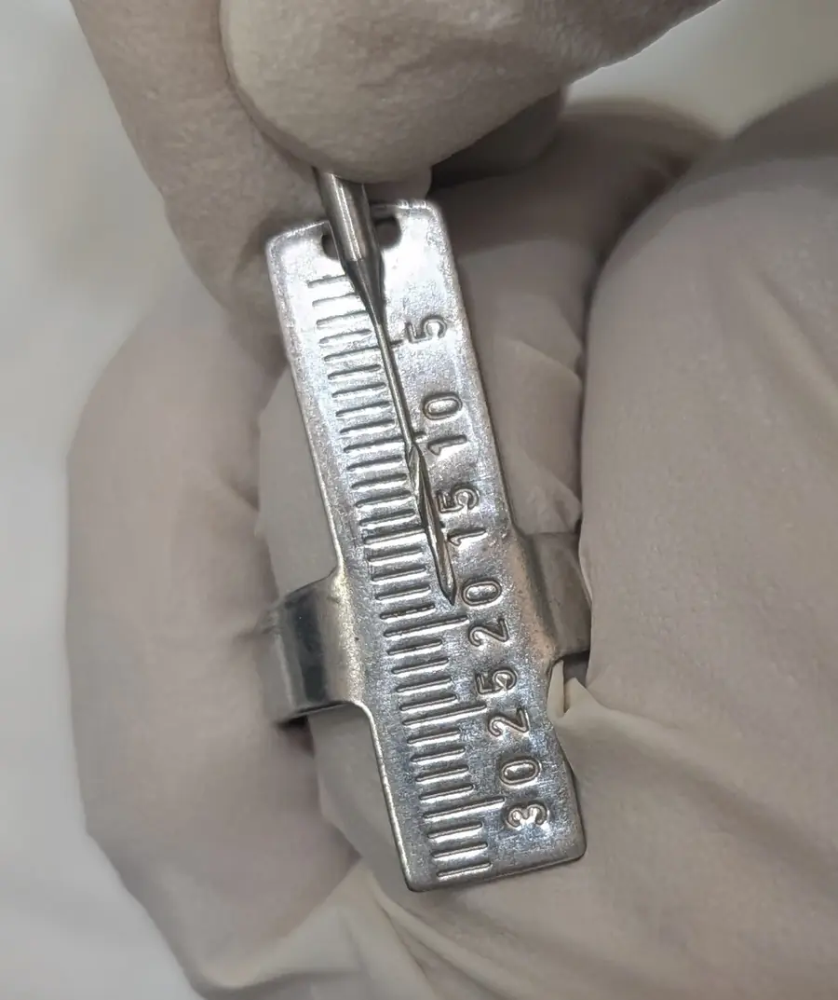

نسخه استخراجشده؛ ترجمه یا تأیید علمی انجام نشده است. وضعیت: captured
در بازسازی وسیع دو فک، جلسهی قبل همهی پست و کورها سمان شدند و دندانها اسکن شد تا در این جلسه روکشهای موقت تحویل بیمار شوند. تا آن روز، همهی دندانها پست و کورند و هیچ استاپ خلفی، حتی به شکل موقت، وجود ندارد. قدام در این فاصله چه وضعی دارد؟

بدون استاپ صحیح خلفی، رستوریشنها و روکشهای دندانهای قدامی محکوم به شکست هستند. تماس دندانهای قدامی بدون حمایت دندانهای خلفی، نیروهای مایل به دندانهای قدامی وارد میکند و احتمال آسیب و از بین رفتن دندانهای قدامی درمانشده را بالا میبرد؛ نیروی مایل بدترین جهت برای رستوریشن قدامی است و زیباترین کار قدامی هم بدون استاپ خلفی دوام نمیآورد. پس همیشه پیش از بازسازی قدام، از وجود استاپ مناسب خلفی مطمئن شو.
در این بیمار، تماس سنگین روی دندانها و پست و کورهای قدامی بود و احتمال شکست آنها در فاصلهی آماده شدن روکشهای موقت زیاد بود. با سمان روکشهای موقت، هم فانکشن و هم زیبایی به بیمار برمیگردد و ساپورت دندانهای خلفی فشار را از روی قدام برمیدارد؛ ولی فاصلهی سمان پست و کورها تا رسیدن موقتها یک پنجرهی خطر واقعی است: هنوز کاری تحویل نشده، ولی سیستم زیر بار است.
برای پست و کور باید کانال را از اوریفیس خالی کنی و پیزو تیپ در دستت است. از کجا بدانی نوک برنده تا کجای کانال پیش رفته است؟

عددها اگر در ذهن باشند، ریسک کمتر میشود. در پیزو تیپها:
خالیکردن کانال از اوریفیس تا حدود ۹ میلیمتر، در اغلب موارد یک ناحیهی امن محسوب میشود. چون طول قسمت برندهی پیزو تیپ هم همین حدود است، فرورفتن ابزار تا انتهای قسمت برنده خودش سنجهی رسیدن به مرز ناحیهی امن است.
دانستن همین عدد ساده، کنترل عمق را دقیقتر و کار را ایمنتر میکند: خود ابزار به خطکش عمق تبدیل میشود و بدون توقف برای اندازهگیری میدانی نوک برنده تا کجای کانال پیش رفته است.
نوع سؤال: ساخت کلمه · 8 خانه
حروف منبع: م · و · ک · پ · ی · ز · ت · ا